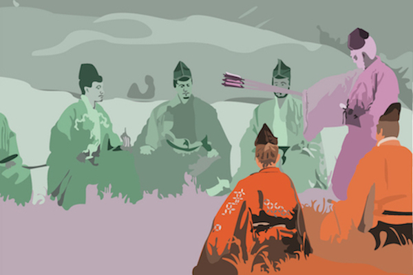

Ran Triadic Tracing
Created in the Sping of 2017
This composition is a vector tracing of a frame from Kurosawa's film Ran, showing depth of field using a range in saturation of a triadic scheme. The frame is divided into foreground, middleground, and background both by color and level of saturation, with the warmer more saturated colors in the foreground and the cooler less saturated colors in the background. This gives the illusion of three dimensionality by activating the foreground and having it recede into the mountains in the background.
This scene tracing was made using the pen tool in Illustrator.